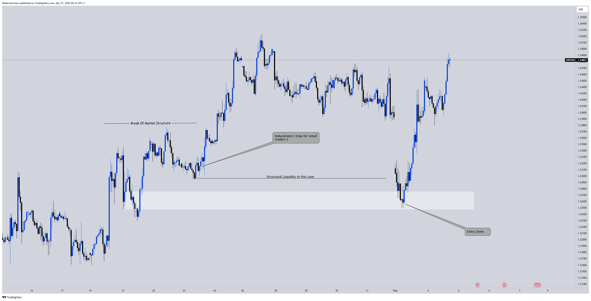

Teaching
Hey class, this video shows a backtested session to help you understand how I envision the market. I recorded this while working with a trainee, demonstrating strategies to enter trades and win consistently
Structural Liquidity
Whenever the market forms a structure and creates a pool of liquidity, I remain patient, knowing that it's likely to be targeted before a significant move.

Transactional Liquidity
Another structure that forms a mini low after the main low, indicating a point of interest for markets to retrace to and take out.

Understanding Theory
After a break of market structure, the market often experiences a pullback before continuing in the direction of the break. Retail traders might interpret the order block in the pullback as an opportunity to enter the market in the direction of the break. However, if this pullback is part of an inducement strategy, smart money might push the price to these levels to trap retail traders before continuing the trend. Identifying structural or transactional liquidity involves recognizing whether the pullback is a valid one or merely a setup to trigger retail entries.

Principles
- Patience
- Edge
- Trust in your Understanding
- Entries and Exits point
- Trading sessions
- Avoiding overtrading
- Journaling